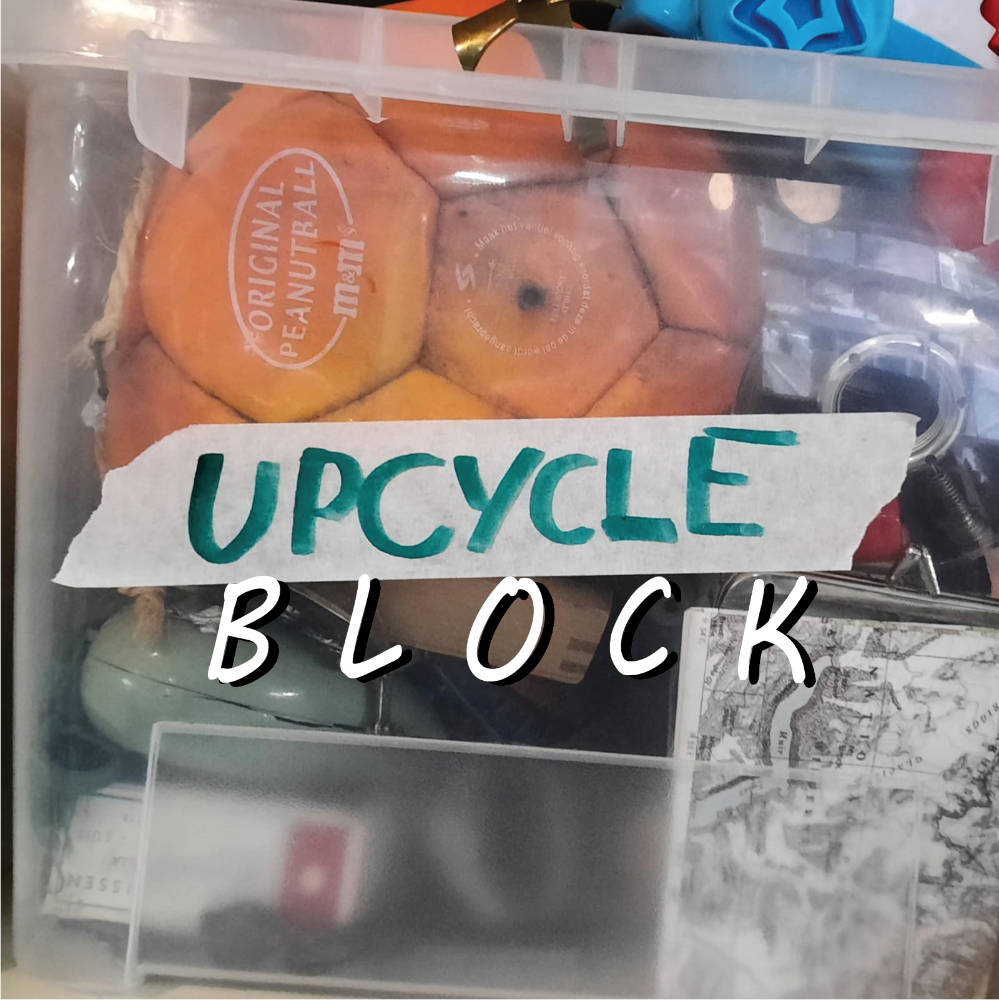

Welkom bij UPB!
Ben je op zoek naar manieren om bewuster om te gaan met je spullen en kleding? Dan ben je op de juiste plek! Bij UPB oftewel Upcycle Block zijn wij toegewijd aan duurzaamheid en willen je graag helpen ontdekken hoe je de wereld kan verbeteren.
Weggeven
Upcyclen
Workshops